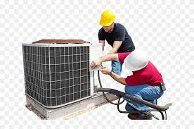

Servicio Tecnico Freire
Instalación, Service, Mantenimiento y Reparación de Aires Acondicionados, CALDERAS, Lozas Radiantes,Estufas, Heladeras, Cocinas,Lavarropas Abrimos mañana a las 09:00

SERVICE MANTENIMIENTO REPARACIÓN de LAVARROPAS familiares y comerciales Automáticos - Semiautomáticos -INDUSTRIALES TODAS las marcas / TODOS los modelos En la reparación usamos repuestos de calidad asegurando el correcto funcionamiento del lavarropas y alargando su vida úti

SERVICIO TECNICO FREIRE
Experiencia Líder en Reparaciones,Instalaciones, Verificaciones, Service, Mantenimiento y Diágnostico de Aire Acondcionados, Sistemas de Climatización, CALDERAS Losas Radiantes, Radiadores, Heladeras, Cámaras de Frío, Lavarropas y electrodomésticos.
Ofrecemos 100% de garantía en cada trabajo y el respaldo de un equipo de Técnicos Matriculados en Refrigeración a su servicio.
Atención a Particulares – Empresas – Comercios – Oficinas - Countries y Barrios Privados
☏: 11 4555-5044
✆ : 54 911 6993-4266
✉: serviciotecnicofreire1@gmail.com
Av.Alvarez Thomas 997